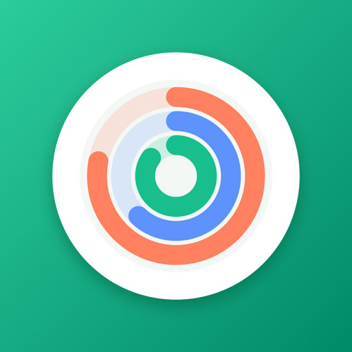
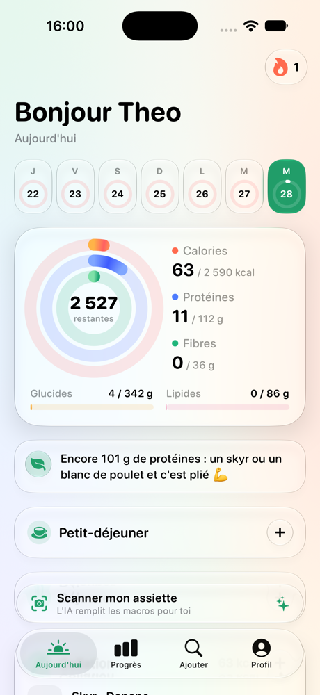
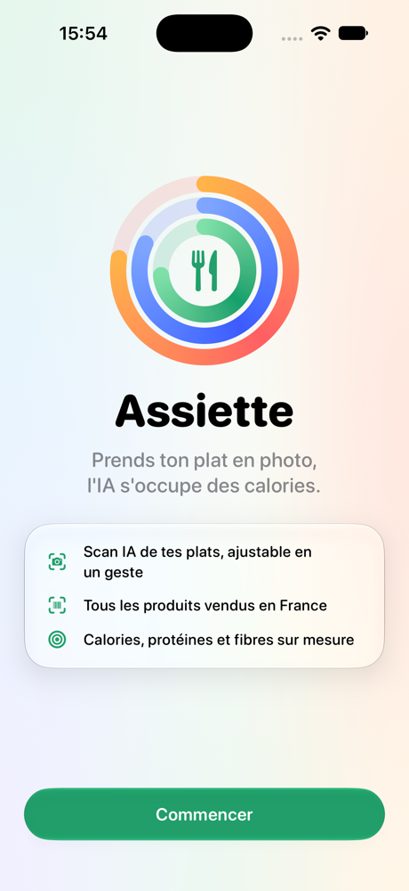
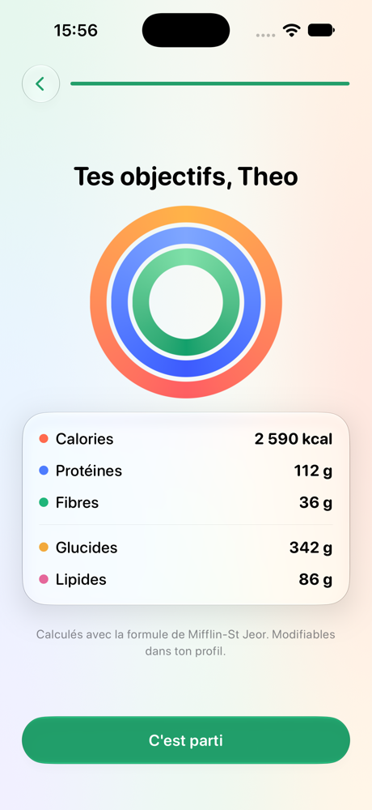
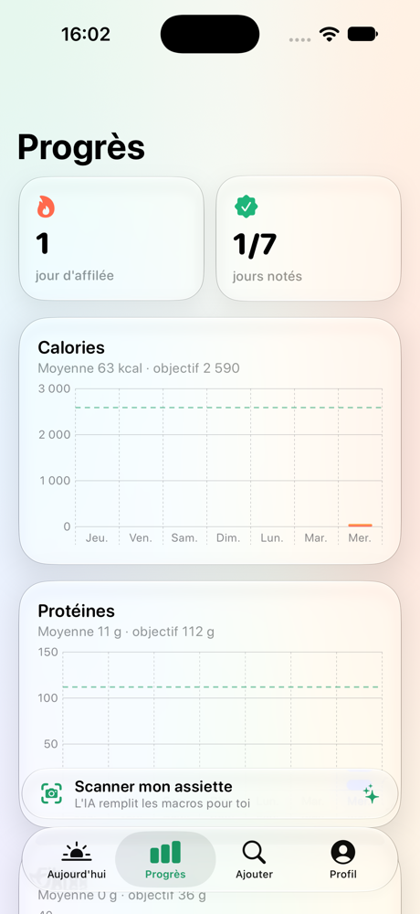

Assiette
Prends ton plat en photo,
l'IA s'occupe des calories.
Comment installer
- Installe AltStore sur ton iPhone (une seule fois).
- Ouvre cette page sur ton iPhone et touche Installer avec AltStore.
- Active le Mode développeur si iOS le demande (Réglages › Confidentialité et sécurité).




📸 Scan IA de tes plats, ajustable en un geste
🎯 Calories, protéines et fibres calculées pour toi
🛒 Tous les produits vendus en France + code-barres
📈 Progrès de la semaine et courbe de poids